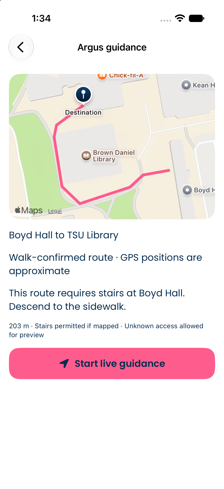

pedestrians, built on iPhone and campus map data.
Glasses integration planned for Semester 2.
Today's route
Problem Statement
Everyday accessibility gaps
Solution
Campus navigation and independence
Goal & Objectives
What we are building
Requirements
Functional requirements
Design
Architecture, then eight subsystems
Status & Next
Prototype and timeline
Everyday mobility barriers
Blocked sidewalks, street crossings, uneven surfaces and unfamiliar entrances can make a journey difficult to follow.
The technology gap
Route directions alone do not describe nearby obstacles or changing conditions. Navigation support needs timely audio or vibration feedback about the surroundings.
Broad need, campus first
Argus aims to support blind and low-vision people in everyday travel. TSU campus is our initial setting to develop and test the system before wider use.
Why campus navigation matters
Reaching classes, work and campus services supports independence. Blind and low-vision pedestrians need usable routes and information about the surroundings ahead.
Independent travel
Getting between campus locations is part of everyday life. Navigation support can help people reach the places they need to go.
Complex walking routes
Sidewalks, crossings, ramps, stairs and multiple entrances require decisions that a route to a building may not explain.
Conditions change
Construction, crowds, uneven surfaces and objects blocking a path can change a journey even when the mapped route stays the same.
What we are building
Mapping Campus Paths
Identify TSU sidewalks and accessible entrances. Build a map-based GUI to mark their locations.
Route Planning
Select destinations; track GPS, compass and motion. Recalculate after deviations. Speak instructions and provide distinct vibrations for turns, warnings and arrival.
Device Integration
Build a hardware access library and Bluetooth links for sensor data and device status. Use camera models to recognize campus landmarks and objects.
Navigation Testing
Test position accuracy, route completion, wrong turns and deviations. Measure recognition accuracy, Bluetooth communication and system response time.
Every requirement has an owner
Campus mapping
Campus MappingGraph import & validation
Route PlanningAccessible interface
Interface & GuidancePositioning
PositioningRouting & recalculation
Route PlanningSpeech & vibration
Interface & GuidanceGlasses connection
Glasses ConnectionLandmark recognition
Model Training + RecognitionApple Watch
Optional · GuidanceRecording & replay
Testing & ReplaySupervised trials
Testing & ReplayAccessibility review
Testing & ReplayReproducible delivery
Whole projectHow the system fits together
One level deeper: eight subsystems
What runs today

Home
Live positioning and guidance on the walk-reviewed Boyd–library route.
- Warns about Boyd stairs
- Updated library endpoint

Simulate
Turn cues and route deviation driven by repeatable movement.
- 3 scenarios
- Spoken cues

Record
Captures GPS, accuracy, sensors and manual marks.
- Save & export
- Replay a walk
From prototype to a tested journey
3–5 mapped routes
Survey paths, crossings, ramps, stairs and accessible entrances.
Validate live guidance
Calibrate route geometry and cue timing; test deviation, recovery and arrival.
Glasses & recognition
Use camera, mic and audio; recognize mapped landmarks on the phone.
Trials & accessibility
Replay tests, then supervised walks; test VoiceOver, voice and vibration.
Final product
Deliver app, campus data, model, replay logs, trial results and guides.
Edmund Afunyah · Sydney Apenteng
Dr. Ali Sekmen · Advisor & Professor
Dr. Rogers · Department Head